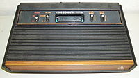
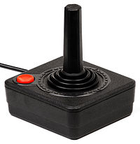
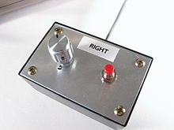
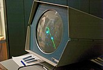
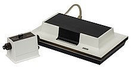
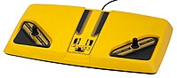
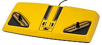

Introduction
The history of video games goes as far back as the early 1950s, when academic computer scientists began designing simple games and simulations as part of their research. Video gaming did not reach mainstream popularity until the 1970s and 1980s, when video arcade games and gaming consoles using joysticks, buttons, and other controllers, along with graphics on computer screens and home computer games were introduced to the general public. Since the 1980s, video gaming has become a popular form of entertainment and a part of modern popular culture in most parts of the world. One of the early games was Spacewar!, which was developed by computer scientists. Early arcade video games developed from 1972 to 1978. During the 1970s, the first generation of home consoles emerged, including the popular game Pong and various "clones". The 1970s was also the era of mainframe computer games. The golden age of arcade video games was from 1978 to 1982. Video arcades with large, graphics-decorated coin-operated machines were common at malls and popular, affordable home consoles such as the Atari 2600 and Intellivision enabled people to play games on their home TVs. During the 1980s, gaming computers, early online gaming and handheld LCD games emerged; this era was affected by the video game crash of 1983. From 1976 to 1992, the second generation of video consoles emerged.  The third generation of consoles, which were 8-bit units, emerged from 1983 to 1995. The fourth generation of consoles, which were 16-bit models, emerged from 1987 to 1999. The 1990s saw the resurgence and decline of arcades, the transition to 3D video games, improved handheld games, and PC gaming. The fifth generation of consoles, which were 32 and 64-bit units, was from 1993 to 2006. During this era, mobile phone gaming emerged. During the 2000s, the sixth generation of consoles emerged (1998–2013). During this period, online gaming and mobile games became major aspects of gaming culture. The seventh generation of consoles was from 2005 to 2012. This era was marked by huge development budgets for some games, with some having cinematic graphics; the launch of the top-selling Wii console, in which the user could control the game actions with real-life movement of the controller; the rise of casual PC games marketed to non-gamers[citation needed]; and the emergence of cloud computing in video games.  In 2013, the eighth generation of consoles emerged, including Nintendo's Wii U and Nintendo 3DS, Microsoft's Xbox One, and Sony's PlayStation 4 and PlayStation Vita. PC gaming has been holding a large market share in Asia and Europe for decades and continues to grow due to digital distribution. Since the development and widespread consumer use of smartphones, mobile gaming has been a driving factor for games, as they can reach people formerly uninterested in gaming, and those unable to afford or support dedicated hardware, such as video game consoles.
Defining the video game
The term video game has evolved over the decades from a purely technical definition to a general concept defining a new class of interactive entertainment. Technically, for a product to be a video game, there must be a video signal transmitted to a cathode ray tube (CRT) that creates a rasterized image on a screen. This definition would preclude early computer games that outputted results to a printer or teletype rather than a display, any game rendered on a vector-scan monitor, any game played on a modern high definition display, and most handheld game systems. From a technical standpoint, these would more properly be called "electronic games" or "computer games." Today, however, the term "video game" has completely shed its purely technical definition and encompasses a wider range of technology. While still rather ill-defined, the term "video game" now generally encompasses any game played on hardware built with electronic logic circuits that incorporates an element of interactivity and outputs the results of the player's actions to a display. Going by this broader definition, the first video games appeared in the early 1950s and were tied largely to research projects at universities and large corporations.
Origins of electronic computer games
The first electronic digital computers, Colossus and ENIAC, were built during World War II to aid the Allied war effort against the Axis powers. Shortly after the war, the promulgation of the first stored program architectures at the University of Pennsylvania (EDVAC), Cambridge University (EDSAC), the University of Manchester (Manchester Mark 1), and Princeton University (IAS machine) allowed computers to be easily reprogrammed to undertake a variety of tasks, which facilitated commercializing computers in the early 1950s by companies like Remington Rand, Ferranti, and IBM. This in turn promoted the adoption of computers by universities, government organizations, and large corporations as the decade progressed. It was in this environment that the first video games were born. The computer games of the 1950s can generally be divided into three categories: training and instructional programs, research programs in fields such as artificial intelligence, and demonstration programs intended to impress or entertain the public. Because these games were largely developed on unique hardware in a time when porting between systems was difficult and were often dismantled or discarded after serving their limited purposes, they did not generally influence further developments in the industry. For the same reason, it is impossible to be certain who developed the first computer game or who originally modeled many of the games or play mechanics introduced during the decade, as there are likely several games from this period that were never publicized and are thus unknown today. The earliest known chess computer program was developed by Alan Turing and David Champernowne called Turochamp, which was completed in 1950 but not actually implemented by them on a computer. The earliest known idea for a fully electronic game is a "Cathode-Ray Tube Amusement Device" in US patent #2,455,992. The earliest known[by whom?][citation needed] electronic computer games actually implemented were two custom built machines called Bertie the Brain and Nimrod, which played tic-tac-toe and the game of Nim, respectively. Bertie the Brain, designed and built by Josef Kates at Rogers Majestic, was displayed at the Canadian National Exhibition in 1950, while Nimrod, conceived by John Bennett at Ferranti and built by Raymond Stuart-Williams, was displayed at the Festival of Britain and the Berlin Industrial Show in 1951. Neither game incorporated a cathode ray tube (CRT) display. Before these, automated games like the simple chess simulator El Ajedrecista (1914) and Nimrod's predecessor Nimatron (1940) had been created as electro-mechanical devices. The first games known to incorporate a monitor were two research projects completed in 1952, a checkers program by Christopher Strachey on the Ferranti Mark 1[20] and a tic-tac-toe program called OXO by Alexander Douglas on the EDSAC. Both of these programs used a relatively static display to track the current state of the game board. The first known game incorporating graphics that updated in real time was a pool game programmed by William Brown and Ted Lewis specifically for a demonstration of the MIDSAC computer at the University of Michigan in 1954.
Tennis for Two – Modern recreation
Perhaps the first game created solely for entertainment rather than to demonstrate the power of some technology, train personnel, or aid in research was Tennis for Two, designed by William Higinbotham and built by Robert Dvorak at the Brookhaven National Laboratory in 1958. Designed to entertain the general public at Brookhaven's annual series of open houses, the game was deployed on an analog computer with graphics displayed on an oscilloscope and was dismantled in 1959. Higinbotham never considered adapting the successful game into a commercial product, which would have been impractical with the technology of the time. Ultimately, the widespread adoption of computers to play games would have to wait for the machines to spread from serious academics to their students on U.S. college campuses.
Spacewar! Early mainframe games
The mainframe computers of the 1950s were generally batch processing machines of limited speed and memory. This made them generally unsuited for games. Furthermore, they were costly and relatively scarce commodities, so computer time was a precious resource that could not be wasted on frivolous pursuits like entertainment. At the Lincoln Laboratory at the Massachusetts Institute of Technology (MIT), however, a team led by Jay Forrester developed a computer called Whirlwind in the early 1950s that processed commands in real time and incorporated a faster and more reliable form of random access memory (RAM) based around magnetic cores. Based on this work, two employees at the lab named Ken Olsen and Wes Clark developed a prototype real time computer called the TX-0 that incorporated the recently invented transistor, which ultimately allowed the size and cost of computers to be significantly reduced. Olsen subsequently established the Digital Equipment Corporation (DEC) with Harlan Anderson in 1957 and developed a commercial update of the TX-0 called the PDP-1. Lincoln Laboratory donated the TX-0 to MIT in 1958. As the computer operated in real time and thus allowed for interactive programming, MIT allowed students to program the computer to conduct their own research, perhaps the first time that university students were allowed to directly access a computer for their own work. Further, the university decided to allow students to set the computer to tasks outside the bounds of classwork or faculty research during periods of time no one was signed up to do official work. This resulted in a community of undergraduate students led by Bob Saunders, Peter Samson, and Alan Kotok, many of them affiliated with the Tech Model Railroad Club, conducting their own experiments on the computer. In 1961, MIT received one of the first PDP-1 computers, which incorporated a relatively sophisticated point-plotting monitor. MIT provided a similar level of access to the computer for students as it did for the TX-0, resulting in the creation of the first (relatively) widespread, and thus influential, computer game, Spacewar!  Spacewar! is credited as the first widely available and influential computer game. Conceived by Steve Russell, Martin Graetz, and Wayne Wiitanen in 1961 and programmed primarily by Russell, Saunders, Graetz, Samson, and Dan Edwards in the first half of 1962, Spacewar! was inspired by the science fiction stories of E. E. Smith and depicted a duel between two spaceships, each controlled by a player using a custom built control box. Immensely popular among students at MIT, Spacewar! spread to the West Coast later in the year when Russell took a job at the Stanford Artificial Intelligence Laboratory (SAIL), where it enjoyed similar success. The program subsequently migrated to other locations around the country through the efforts of both former MIT students and DEC itself, more so after cathode ray tube (CRT) terminals started becoming more common at the end of the 1960s. As computing resources continued to expand over the remainder of the decade through the adoption of time sharing and the development of simpler high-level programming languages like BASIC, an increasing number of college students began programming and sharing simple sports, puzzle, card, logic, and board games as the decade progressed. These creations remained trapped in computer labs for the remainder of the decade, however, because even though some adherents of Spacewar! had begun to sense the commercial possibilities of computer games, they could only run on hardware costing hundreds of thousands of dollars. As computers and their components continued to fall in price, however, the dream of a commercial video game finally became attainable at the start of the 1970s.
The commercialization of video games
By 1970, the introduction of medium scale integration (MSI) transistor–transistor logic (TTL) circuits combining multiple transistors on a single microchip had resulted in another significant reduction in the cost of computing and ushered in a new wave of minicomputers costing under $10,000. While still far too costly for the home, these advances lowered the cost of computing enough that it could be seriously considered for the coin-operated games industry, which at the time was experiencing its own technological renaissance as large electro-mechanical target shooting and driving games like Sega Enterprises's Periscope (1967) and Chicago Coin's Speedway (1969) pioneered the adoption of elaborate visual displays and electronic sound effects in the amusement arcade. Consequently, when a recent engineering graduate from Utah with experience running coin-operated equipment named Nolan Bushnell first saw Spacewar! at SAIL in late 1969 or early 1970, he resolved to build a coin-operated version for public consumption. Enlisting the aid of an older and more experienced engineer named Ted Dabney, Bushnell built a variant of the game called Computer Space in which a single player-controlled spaceship dueled two hardware-controlled flying saucers. Released in late November or early December 1971 through Nutting Associates, the game failed to have much impact in the coin-operated marketplace.
The Magnavox Odyssey, the first home console
Meanwhile, Ralph Baer, an engineer with a degree in television engineering working for defense contractor Sanders Associates, had been working on a video game system that could be plugged into a standard television set since 1966. Working primarily with technician Bill Harrison, who built most of the actual hardware, Baer developed a series of prototype systems between 1966 and 1969 based around diode–transistor logic (DTL) circuits that would send a video signal to a television set to generate spots on the screen that could be controlled by the players. Originally able to generate only two spots, the system was modified in November 1967 at the suggestion of engineer Bill Rusch to generate a third spot for use in a table tennis game in which each player controlled a single spot that served as a paddle and volleyed the third spot, which acted as a ball.  In 1971, Sanders concluded a licensing agreement with television company Magnavox to release the system, which reached the market in September 1972 as the Magnavox Odyssey. The system launched with a dozen games included in the box, four more sold with a separate light gun, and six games sold separately, most of which were chase, racing, target shooting, or sports games. These games were activated using plug-in circuit cards that defined how the spots generated by the hardware would behave. Due to the limited abilities of the system, which could only render three spots and a line, most of the graphic and gameplay elements were actually defined by plastic overlays attached to the TV set along with accessories like boards, cards, and dice. Like Computer Space the Odyssey only performed modestly and failed to jump start a new industry. However, the system did directly influence the birth of a vibrant video arcade game industry after Ralph Baer's design ingenuity intersected Nolan Bushnell's entrepreneurial ambition.
A new industry
Early arcade video games (1972–1978)
Pong was the first arcade game to ever receive universal acclaim.
In 1972, Nolan Bushnell and Ted Dabney decided to strike out on their own and incorporated their preexisting partnership as Atari. After seeing a demonstration of the Magnavox Odyssey ahead of its release, Bushnell charged new hire Allan Alcorn to create a version of that system's table tennis game as a practice project to familiarize himself with video game design. Alcorn's version ended up being so fun that Atari decided to release it as Pong. Available in limited quantities in late 1972, Pong began reaching the market in quantity in March 1973, after which it ignited a new craze for ball-and-paddle video games in the coin-operated amusement industry. The success of Pong did not result in the displacement of traditional arcade amusements like pinball, but did lay the foundation for a successful video arcade game industry. Roughly 70,000 video games, mostly ball-and-paddle variants, were sold in 1973 by a combination of recent startups like Atari, Ramtek, and Allied Leisure and established Chicago firms like Williams, Chicago Coin, and the Midway subsidiary of Bally Manufacturing.
 The video arcade game market remained in a state of flux for the remainder of the decade. The ball-and-paddle market collapsed in 1974 due to market saturation, which led to a significant drop in video game sales. Smaller manufacturers attempted to compensate by creating "cocktail table" cabinets for sale to non-traditional venues like higher class restaurants and lounges, but this market failed to fully develop. Larger companies like Atari and Midway turned to new genres to remain successful, especially racing games, one-on-one dueling games, and target shooting games. Early hits in these genres included Gran Trak 10 (1974) and Tank (1974) from Atari, and Wheels (1975), Gun Fight, (1975) and Sea Wolf (1976) from Midway. Wheels and Gun Fight were licensed versions of Speed Race and Western Gun developed by the Taito Trading Company of Japan, marking the start of Japanese video game penetration into the United States. Gun Fight was also one of the first arcade games to incorporate a microprocessor, starting a shift away from video arcade games engineered using dedicated TTL hardware to video games programmed in software.

The video game was one of several concepts that helped to reform the image of the arcade as a seedy hangout for delinquents. This in turn aided the growth of arcades in suburban shopping malls. The principle pioneer of the shopping mall arcade was Jules Millman, who established an arcade in a shopping mall in Harvey, Illinois, in 1969. By banning eating, drinking, and smoking, and maintaining a full staff at all times to keep an eye on the facilities, Millman created a safe environment where parents could feel safe leaving their older children while browsing other stores in the mall. Millman founded American Amusements to establish more shopping mall arcades, which was purchased by Bally in 1974 and renamed Aladdin's Castle. Other entrepreneur's imitated Millman's format, and arcades became a mainstay of the shopping mall by the end of the decade.
The emergence of solid state pinball in the late 1970s, in which electro-mechanical technologies like relays were replaced by the newly emerging microprocessor, temporarily stole the limelight from video games, which once again entered a period of decline in 1977 and 1978. While individual games like Atari's Breakout (1976) and Cinematronics' Space Wars (1978) sold in large numbers during this period, overall profitability began to lag. The market surged once again, however, after the introduction of the Taito game Space Invaders by Midway in 1979.
The video arcade game market remained in a state of flux for the remainder of the decade. The ball-and-paddle market collapsed in 1974 due to market saturation, which led to a significant drop in video game sales. Smaller manufacturers attempted to compensate by creating "cocktail table" cabinets for sale to non-traditional venues like higher class restaurants and lounges, but this market failed to fully develop. Larger companies like Atari and Midway turned to new genres to remain successful, especially racing games, one-on-one dueling games, and target shooting games. Early hits in these genres included Gran Trak 10 (1974) and Tank (1974) from Atari, and Wheels (1975), Gun Fight, (1975) and Sea Wolf (1976) from Midway. Wheels and Gun Fight were licensed versions of Speed Race and Western Gun developed by the Taito Trading Company of Japan, marking the start of Japanese video game penetration into the United States. Gun Fight was also one of the first arcade games to incorporate a microprocessor, starting a shift away from video arcade games engineered using dedicated TTL hardware to video games programmed in software.

The video game was one of several concepts that helped to reform the image of the arcade as a seedy hangout for delinquents. This in turn aided the growth of arcades in suburban shopping malls. The principle pioneer of the shopping mall arcade was Jules Millman, who established an arcade in a shopping mall in Harvey, Illinois, in 1969. By banning eating, drinking, and smoking, and maintaining a full staff at all times to keep an eye on the facilities, Millman created a safe environment where parents could feel safe leaving their older children while browsing other stores in the mall. Millman founded American Amusements to establish more shopping mall arcades, which was purchased by Bally in 1974 and renamed Aladdin's Castle. Other entrepreneur's imitated Millman's format, and arcades became a mainstay of the shopping mall by the end of the decade.
The emergence of solid state pinball in the late 1970s, in which electro-mechanical technologies like relays were replaced by the newly emerging microprocessor, temporarily stole the limelight from video games, which once again entered a period of decline in 1977 and 1978. While individual games like Atari's Breakout (1976) and Cinematronics' Space Wars (1978) sold in large numbers during this period, overall profitability began to lag. The market surged once again, however, after the introduction of the Taito game Space Invaders by Midway in 1979.